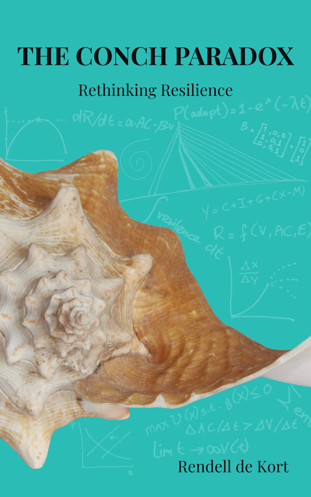

A talk and conversation at the University of St. Martin

The queen conch grows a shell so heavy and so perfect that nothing can get in. It also cannot get out. Rendell de Kort wrote The Conch Paradox about what happens when an island economy gets very good at one thing, and why the protection that served it well can become the trap.
The book starts from Aruba, but the question travels. St. Martin knows about building an economy around visitors, and it knows what a single storm can do to it. The evening is a short talk followed by an open conversation, and the conversation is the larger part.
Students from three courses at the university and members of a local book club will be there. Copies of the book are available after the talk, and Rendell is happy to sign them.
Seating is limited, so please let Rendell know by Tuesday 29 September. Reply to the person who sent you this link, or send a WhatsApp or email to rendell@c-economics.com. Tell us how many people you are bringing, and we will send you the room.